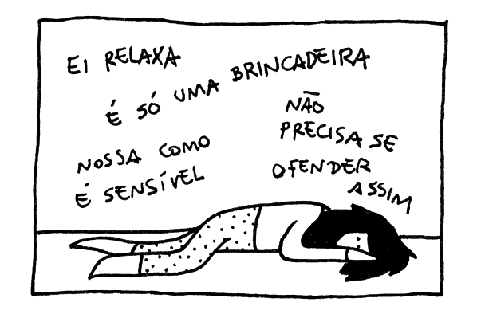

Cyberbullying
Home
Características
Consequências
Recomendações
Filmes
Características
Algumas características da prática do cyberbullying:
verbal (insultar, xingar e apelidar pejorativamente);
moral (difamar, caluniar, disseminar rumores);
sexual (assediar, induzir e/ou abusar);
social (ignorar, isolar e excluir);
psicológica (perseguir, amedrontar, aterrorizar, intimidar, dominar, manipular, chantagear e infernizar).
